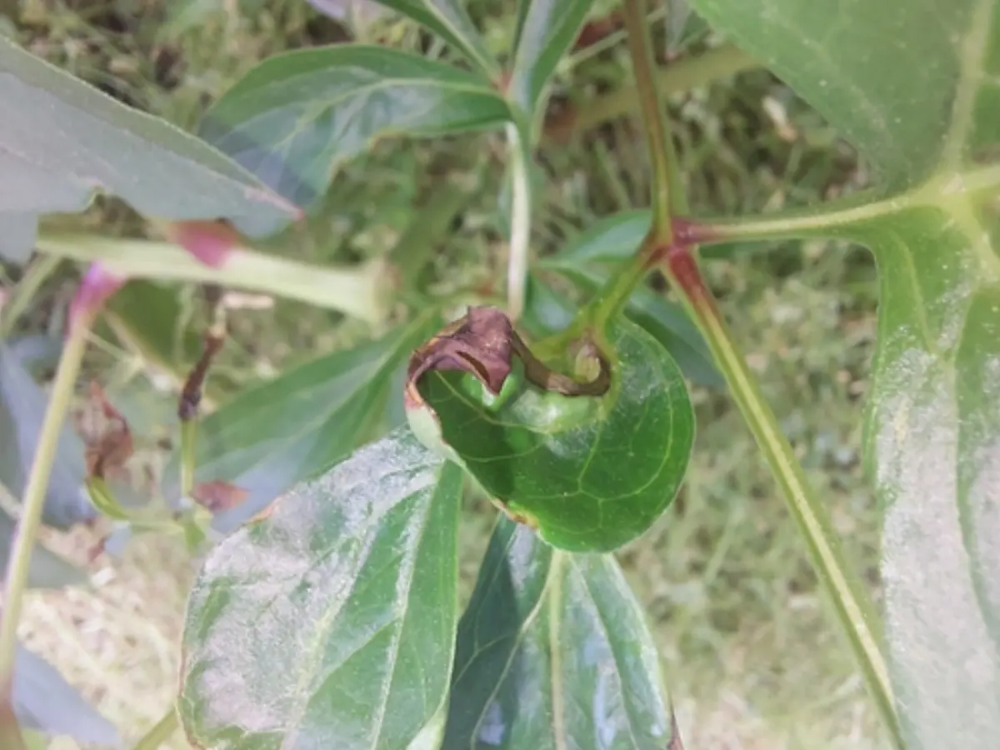

花的问题

花朵变软腐烂轻看花瓣交叠处是否水渍状，比较刚开的花和老花。

花朵干枯枯萎是否只发生在已经开放很久的花？看花蕾及同一枝条的叶片是否健康。

黄色花瓣萎软起皱花瓣折叠起皱，花下露出的茎仍是绿色。先和刚开放的花比较，再决定是否调整养护。

花瓣上有毛虫或咬痕检查花瓣背后和花蕾内侧是否有幼虫、较大的咬孔或颗粒状虫粪。

花瓣上的甲虫观察是否能看到甲虫正在取食花瓣，记录其形状及出现的时段。

花蕾附近有长吻甲虫，未开的花蕾下垂傍晚检查新咬出的叶缘缺刻，结合成虫的长吻和所在植物判断。

已开放的月季中央又长出花蕾本已开放的花，中央又冒出一枚花蕾。找到新蕾基部，可以把真正的花贯生与花枝重叠区分开来。

月季花心的花器变成绿色小叶平常开彩色花的月季若在花心长出叶片状组织，下一轮花的表现可帮助判断这种变化是否持续。

萱草花蕾变得短粗膨大同一萱草花葶可同时有细长蕾和肿胀短蕾，剖开一枚异常花蕾可检查有无取食的幼虫。

白蜡树枝头悬挂褐色团块冬季显眼的褐色干团块，可能是螨类刺激雄花形成的老瘿。先观察团块形态与周围树冠的长势。

白花蝇子草的花药沾满紫色粉末白花中的深色粉末若来自花药，是较重要的线索。比较同一片蝇子草中新开的花与将谢的花。

大麦抽出的穗变成黑褐色粉团附近麦穗仍青绿时，个别大麦穗已呈黑色。宜在黑粉被风吹散、仅剩穗轴之前观察。

杜鹃枯蕾表面密生黑色小刺周围杜鹃已经开花时，查看仍闭合的花蕾。如果灰褐色死蕾表面密生黑色小针状物，符合杜鹃芽枯病的特征。

岩芥类植物顶端的黄叶簇形似花朵早春的岩芥类植物上，一簇鲜黄组织远看像花，近看可能是锈菌使叶片形态改变后形成的假花。

草的花序被毡状菌套包住、难以抽出观察即将抽穗的一丛禾草。受影响的分蘖上，正常花序应抽出的位置可能被贴合叶鞘的白色或黄橙色毡状组织包住。

毛蕊花花序上出现圆鼓的花蕾瘿毛蕊花的花序上，可能有一两枚花蕾异常膨成球状。把一整段花序纳入视野，才能与正常的花蕾、开放花及蒴果区分。

草穗中个别籽粒被深色角状体取代成熟草穗中若有少数坚硬深色突起，像小角一样取代了正常籽粒，应考虑麦角，将相关材料与食物、饲料分开。

茶花树下的土里长出带柄小杯花谢后拨开落叶。照片里的小杯长在土表，不是仍挂在枝上的花。

郁金香叶上有浅色斑，花塌在叶丛里浅色斑和塌在叶片之间的花要记在同一株上。只在老花瓣上长灰霉时另查。

芍药花蕾没开放就变褐皱缩褐蕾是干壳，周围叶片大多仍绿。叶片上若另有圆斑，要另外拍照。

果树枝上的花枯死后仍然挂着褐花的花梗还连在短枝上。果实上的绒垫是另一条记录，这张照片里没有果实。